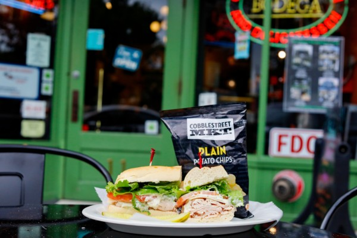

Oxford has a wide range of restaurants that are popular with both students and residents. Many of these places offer affordable meals while still providing great quality and atmosphere. Restaurants in town often become local favorites because they create welcoming environments where people can gather, eat, and socialize. Some locations specialize in classic American comfort food, while others offer international dishes that bring new flavors to the area.
Trying different restaurants is a great way to experience what Oxford has to offer. Whether you're craving a burger, pizza, or something more unique, there are options available for every taste. Many of these restaurants are located close to campus, making them convenient places to stop after class or during weekends. Exploring local dining spots can help you discover new favorite meals and enjoy the food culture of the town.
Tip: Visiting earlier in the evening can help you avoid long wait times.
Find more restaurant reviews here.
Visit us at 123 Main St, Oxford, OH | Call: (555) 123-4567 | Email: info@bestfoodoxford.com